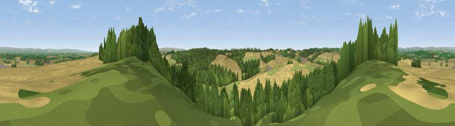

Viewpoint near Slingsby
#12127 in England · top 21% of its area beats it · near SlingsbyThe view, rendered

A 360° render of this exact spot computed from the terrain model, tree cover and land cover — summer colours, afternoon light, calibrated against photographs of famous viewpoints. Real trees, hedges and buildings will differ in detail.
The panorama
Grey silhouette: terrain skyline in each direction (720 bearings, Earth curvature and refraction included). Dashed green: skyline with trees (+15 m) and buildings (+8 m) as obstacles. Blue strip: how far the ground is visible on each bearing.
Where the view opens
Wedge length = distance to the farthest visible ground on that bearing (vegetation-aware). Rings at 10, 25 and 50 km.
What fills the view
43% cropland · 39% woodland · 17% grassland
Angular shares of the visible panorama (visual magnitude), not map area. Landscape diversity 0.46 (0–1 Shannon).
Key numbers
More beautiful places nearby
The staircase of upgrades: each row has a higher view potential than everything closer. Driving times are estimates from straight-line distance, calibrated against real road routing — check an actual route before setting out.
| Place | Direction | Drive | Score |
|---|---|---|---|
| Viewpoint near Slingsby | ESE · 1 km | ~3 min | 62.4 |
| Viewpoint near Coneysthorpe | ESE · 3 km | ~8 min | 65.8 |
| Viewpoint near Terrington | SW · 4 km | ~9 min | 70.4 |
| Viewpoint near Brandsby | W · 9 km | ~17 min | 71.8 |
| Viewpoint near Ampleforth | NW · 10 km | ~20 min | 76.6 |
| Viewpoint near Kilburn | WNW · 19 km | ~33 min | 79.3 |
| Hood Hill | WNW · 20 km | ~34 min | 79.6 |
| Viewpoint near Thirlby | WNW · 20 km | ~35 min | 81.5 |
54.15296, -0.94920 · source: screening · position refined by local search. Computed location — check access rights before visiting.